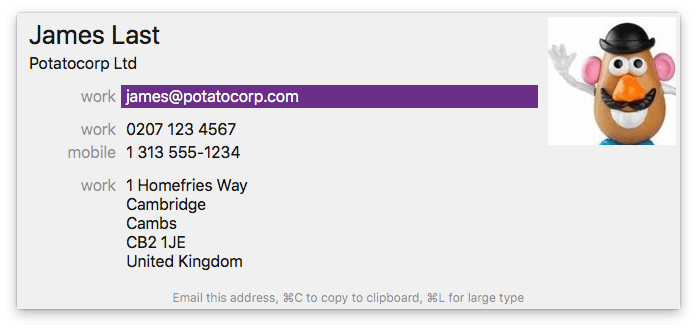
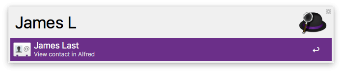
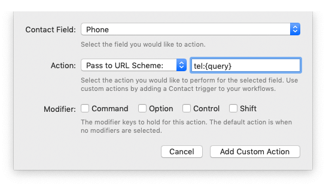
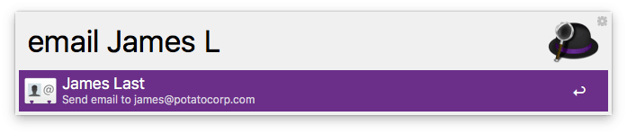
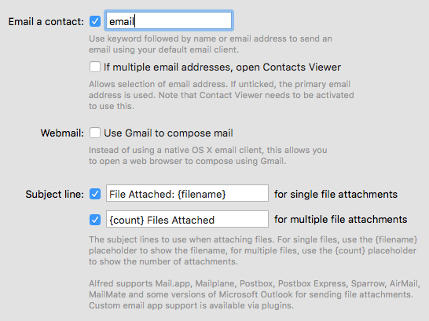
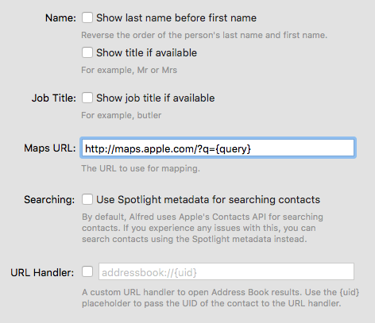

Contacts
Save time and effort looking up your contacts' details with Alfred. Search for Contacts in Alfred to speed up finding a friend's phone number or email address.
Type your contact's name to access their contact details. Powerpack users can also open these contacts in Alfred's Contacts Viewer to start an email, copy an address, call the contact and more.

Find out more about using Contacts in Alfred:
- Searching for Contacts
- Using the Contacts Viewer
- Emailing Contacts
- Advanced Preferences
- Contacts Troubleshooting
Searching for Contacts
You can search for a contact by simply typing their name into Alfred's search box, provided that the checkbox for "Contacts" is ticked in the Default Results preferences.

For non-Powerpack users, pressing the Return key will launch the macOS Contacts.app application with the details of your contact. For Powerpack users, the contacts will launch in Alfred's in-line Contacts Viewer.
Using the Contacts Viewer
With the Powerpack, you can view your contact's details in-line and take action on them. By default, once you've activated your Powerpack license, Alfred will open the contact's details in the Contact Viewer. You can still open contacts in Apple's Contacts app by using ⌘o.
When you've pressed Return and you see your contact's details in-line, use the down arrow to choose a particular contact information.
Here are some of the actions you'll be able to perform by default when pressing Return on information in the Contacts Viewer:
- On an email address, it will launch a new email to your contact in your default email client
- On a phone number, it'll copy the number to your clipboard
- On an address, it'll be opened in Apple Maps
- Other contact details (e.g. birthday, social network usernames) are copied to clipboard
Can't remember what action will be performed? Take a look at the subtext at the bottom of the Contact Viewer for details.
Customising Actions on Contacts
If you'd like to take an alternative action on contacts, you can add Custom Actions in the Contacts preferences.
For example, the "Phone" contact field action can be changed to pass the phone number to the tel:// URL scheme, which means that macOS will dial the phone number in your default app for this (e.g. FaceTime)

You can configure alternative actions using modifiers, for example, you could set ⌘↩︎ to use the tel:// URL scheme, and ↩︎ to copy to clipboard.
It is also possible to call a Contact Action Trigger within one of your workflows when selecting an item in the Contact Viewer. If you're not sure how to create these custom actions, pop by the Alfred forum where fellow Alfred users can help you out.
Emailing your Contacts
There are a few different ways to launch a new email a contact:
- Search for your contact, view their Contact Card as above, and press return on the email address you want to use
- Type "email" followed by the name or email address of your contact to launch an email to their default address
- Or find a file in Alfred and choose the "Email to..." action from the Result Actions menu

In the Features > Contacts > Email preferences, you can modify a few additional settings to suit your needs:
- Change or disable the "email" keyword used to tell Alfred to launch a new email to a contact
- Show the Contact Viewer if a contact has more than one email address
- Use Gmail in a web browser to compose emails
- Change the default subject lines when files are attached to new emails

Alfred supports Mail.app, Mailplane, Postbox, Postbox Express, Sparrow, AirMail, MailMate, and some versions of Microsoft Outlook for sending file attachments. Custom email app support is available via plugins.
For help using a different mail client, pop by the Alfred forum and search for your preferred email client, as many scripts have already been created by other users.
Using a contact's secondary address
By default, Alfred will save you time by automatically selecting the primary email address for any Contacts you choose.
To change this behaviour, take a look in Alfred's Features > Contacts > Email preferences where you can turn on showing the Contact Viewer if there are multiple email addresses.
Check the box that says "If multiple email addresses, open Contacts Viewer" to activate this feature.
Advanced Contacts Preferences
In the Advanced preferences, you'll find additional settings:

- Name: Show last name before first name, and show title (e.g. Mrs) if available
- Job Title: Show if available
- Maps URL: Change to an alternative Maps service
- Searching: Use Spotlight metadata for searching contacts if you experience issues with Apple's Contacts API
- URL Handler: Users of contacts apps (e.g. BusyContacts) can change the URL Handler so that contacts are launched in their preferred app instead of Contacts.
Contacts Troubleshooting
If you're having issues finding contacts when typing their name in Alfred, check that the box for Contacts is checked in your Default Results.
If your contact's name contains accented characters (diacritics), take a look at the Contacts with Diacritics page for details.
In order for Alfred to be able to search your Contacts and present them in the results, you need to grant him access to them. Here's how to grant Alfred access to your Contacts if you didn't allow it the first time.